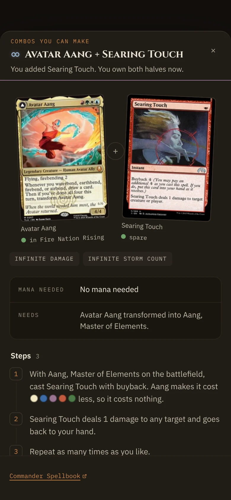
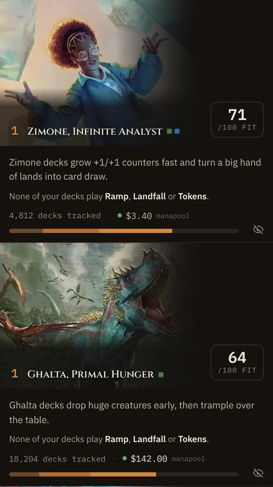

Small items 12 · R1 · account 2 · 2026-11-15
Small items 12 · combo sheet, signature card from the menu, price label
Three small changes from Hugh's notes. Each is drawn at 390 and at desktop over the shipped component it changes, rendered with the shipped CSS (Low Sun). New or moved pieces get a dashed copper outline on their own frame. Strings marked DRAFT go through /copy-review.
1 · Combo sheet refresh
- One body for all three ways in (card details, combos one piece away, the feed). Only the head changes: the shipped back bar where there is something to go back to, the shipped
.hd2head with ✕ when the feed opens it on its own. - The pair leads as two cards at card shape, tilted 2.5° toward each other with a + between (150px on the phone, 128px at 760). Shipped plates, where-lines and the dashed missing piece.
- Facts before steps: Mana needed and Needs in one rail card above the steps (Needs is what must be true before step 1).
- Numbered steps on the first-run step numeral (22px, accent ink), a faint rule joining them, Steps 9 as a count, and
{X}drawn as the shipped cost pips inside the text. - Long combos scroll under a pinned head and foot. No collapse, no "show all".
- Feed-opened: eyebrow Combos you can make, the pair as title, lead You added Searing Touch. You own both halves now. (DRAFT; the first sentence is the shipped feed line). Plates say where each copy is; no Add.
2 · Signature card from the account menu
- The face is the press, not a new menu row. Same ✎ badge as Friends' head; + with no card.
- Opens the same picker (
SignaturePicker, unchanged) over the menu. On the phone its sheet covers the menu sheet; on desktop its modal sits over the popover, which stays open. - Save or ✕ returns to the menu, with the new face in the head and on the trigger, focus on the face.
3 · Price source label
- Beside the figure, 6px after it, inside the price's own item, at every width.
ml-autoretires. - Only one row draws a priced source stamp (
commander-row.tsx, used by Discover and the Commanders list), so this one change covers every such row.
Open for Hugh
- The tilt on the combo pair. Drawn at 2.5°. Flat is the quieter option if it reads as too playful in a reference sheet.
- Feed lead copy. You own both halves now. is new (DRAFT), after the shipped You added Searing Touch.
- Picker over the menu, or in place of it? Drawn over it (the menu waits underneath, so a save lands you back where you were). Closing the menu first is the other option.
1bCombo, one piece away

1dCombo, feed-opened

2aMenu face, the press

3Price label
